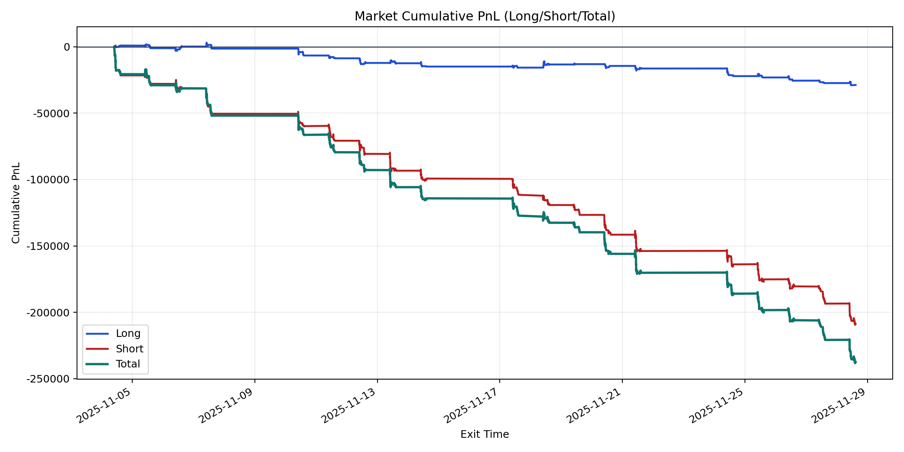
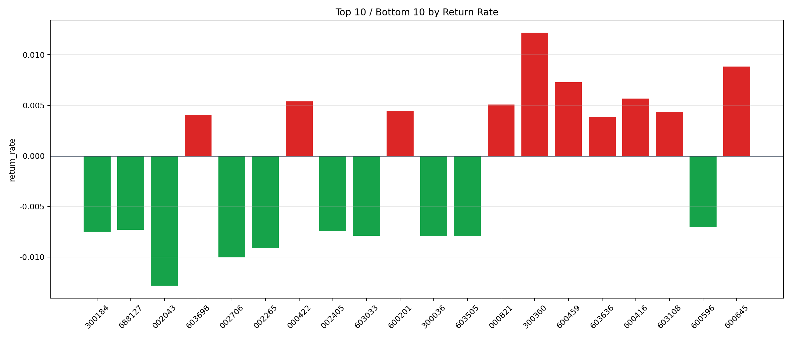

| repo_root | /home/haoranyou/data/output/dynamic_AUM_TAKER_index1000 |
|---|---|
| period_months | 1 |
| period_label | 2025-11-04_to_2025-11-28 |
| start_time | 2025-11-04 09:50:17 |
| end_time | 2025-11-28 14:42:37 |
| n_trades | 10367 |
| n_symbols | 286 |
| total_pnl | -237349.4351000018 |
| long_total_pnl | -28806.950949999395 |
| short_total_pnl | -208542.4841500024 |
| total_entry_notional | 180834544.0 |
| long_entry_notional | 38975509.0 |
| short_entry_notional | 141859035.0 |
| total_return_rate | -0.0013125226510926021 |
| long_return_rate | -0.0007391039062504455 |
| short_return_rate | -0.001470068396771502 |
| top_symbols_by_return | ["300360", "600645", "600459", "600416", "000422", "000821", "600201", "603108", "603698", "603636"] |
| bottom_symbols_by_return | ["002043", "002706", "002265", "300036", "603505", "603033", "300184", "002405", "688127", "600596"] |

